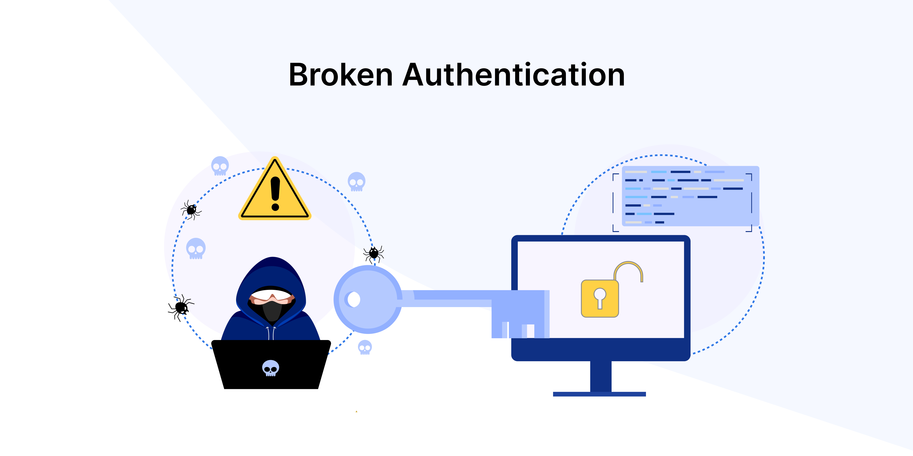

|
SQL Injection
Image from www.simplilearn.com (link)
|
Structured Query Language (SQL) is the language that is used to query relational databases, which are
used ubiquitously. A successful SQL injection attack occurs when an attacker inputs SQL code that is ultimately
run by the database engine, typically with the aim to obtain information. There are a few subtypes of this attack,
including unsanitised input, blind, and out of band. Unsanitised input, for example, is when the input (on the website,
or other user interface) is intended to be data stored in the database, but is crafted to form part of the query that
is executed instead.
https://www.rapid7.com/fundamentals/sql-injection-attacks/
|
|
XSS

Image from evalian.co.uk (link)
|
XSS, or cross-site scripting, is an attack that uses vulnerable websites to cause other users browsers
to load malicious scripts. These scripts are commonly written in JavaScript, but may be written in any
language that the browser supports. This attack is similar to SQL injection in that it involves what was
expected to be data being treated as executable code. Unlike SQL injection though, this attack targets
other users, rather than the website itself.
https://www.rapid7.com/fundamentals/cross-site-scripting/
|
|
DOS/DDOS

Image from www.onelogin.com (link)
|
DOS, or denial of service, is an attack that prevents other users from using a particular service (e.g. a website).
One way of accomplishing this is to consume all (or most) of a given resource like network connections, memory, disk space, etc.,
so that there are no resources left to serve legitimate users. A variant of a denial of service of particular interest is called
a distributed denial of service (DDOS), which uses multiple computers to attack the target simultaneously.
https://www.rapid7.com/fundamentals/denial-of-service-attacks/
|
|
Broken authentication

Image from medium.com (link)
|
Broken authentication attacks occur when an attacker gains access to a system by compromising authentication mechanisms.
This includes obtaining passwords (there are password lists online, and password reused is not uncommon), or other
keys/tokens/etc, often from inherently insecure protocols. Sending credentials over an insecure (unencrypted) channel is one of
a number of common causes.
https://www.contrastsecurity.com/glossary/broken-authentication
|
|
Fuzzing

Image from www.freecodecamp.org (link)
|
Fuzzing is an automated software testing method that aims to make an application behave in an unintended way.
This is achieved by providing random, or otherwise abnormal input until the unintended behaviour occurs, at which
point a vulnerability is identified and may be fixed. ALternatively, the vulnerability may be exploited,
or kept for later use.
https://brightsec.com/blog/fuzzing/
|
|
MITM
Image from cpanel.net (link)
|
Man in the middle (MITM) is an attack where the attacker inserts themselves into the middle of
a legitimate communication. The attacker is then able to read the messages being sent, and in some
variants of the attack, can manipulate the communications. An example of a MITM attack is when the
attacker impersonates each party to the other party by forwarding each party's messages.
https://www.rapid7.com/fundamentals/man-in-the-middle-attacks/
|
|
Phishing
Image from www.corsicatech.com (link)
|
Phishing is an attack that uses social engineering (manipulation of a human by convincing them to do something)
to obtain information. Information commonly sought is usernames/passwords, possibly from websites linked to by
the phisher (person performing the phishing attack) that look legitimate, but are controlled by the phisher.
A variant of this attack, called spear phishing, uses more detailed information about a specific target in order
to create a more believable attack. Another variant, called whaling, targets high level executives such as a CEO,
with the aim of gaining more valuable information.
https://www.rapid7.com/fundamentals/phishing-attacks/
|
|
Enumeration

Image from kasperskydaily.com (link)
|
An enumeration attack is an attack in which the attacker uses brute force to check for the existence of
data. Data can be confirmed to exist if the reponse differs when the extant data is tested for. An
example of this attack is checking for valid usernames, if a valid username and invalid password has a different
error message to an incorrect username and incorrect password. The difference in response could even be in time
it takes for the reponse to be given.
https://www.upguard.com/blog/what-is-an-enumeration-attack
|
|
Directory traversal
Image from acunetix.com (link)
|
A directory traversal attack is an attack in which the attacker reads files from the web server
other than the files they are supposed to read, like a file containing passwords instead of an image.
This attack is possible when user input is included in a file path used to retrieve a file.
The attack could consist of including "../" sequences, which navigate to the parent directory, or
specifying an absolute path.
https://portswigger.net/web-security/file-path-traversal
|
|
Ransomware
Image from kaspersky.com (link)
|
Ransomware is a type of malware that, once placed on a compromised system, encrypts data so that the target does
not have access to it. It then offers to sell the target the means to decrypt it in exchange for (typically)
some amount of a cryptocurrency. Ransomware often deletes backups/etc. of the data, and carefully selects the
types of data to encrypt in order to maximise that chance of success (reducing the ability to restore data
without decrypting, while keeping the system stable). Some variants of ransomware perform additional steps,
including for example, data theft. This has the additional benefit (to the attacker) of allowing them to release
data publicly as an additional incentive to the victim to pay.
https://www.checkpoint.com/cyber-hub/threat-prevention/ransomware/
|
{kind=link}
{kind=link}
{kind=link}
{kind=link}
{kind=link}
{kind=link}
{kind=link}
{kind=link}
{kind=link}
{kind=link}